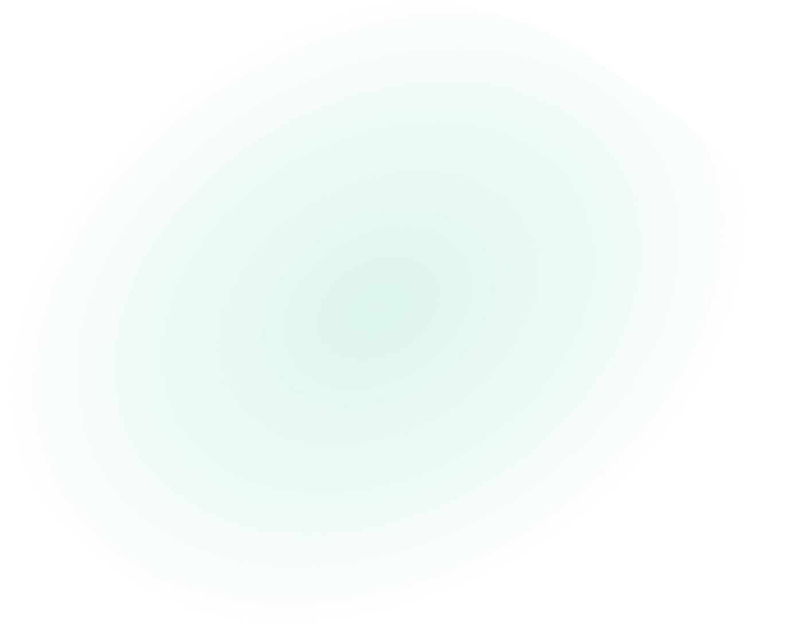
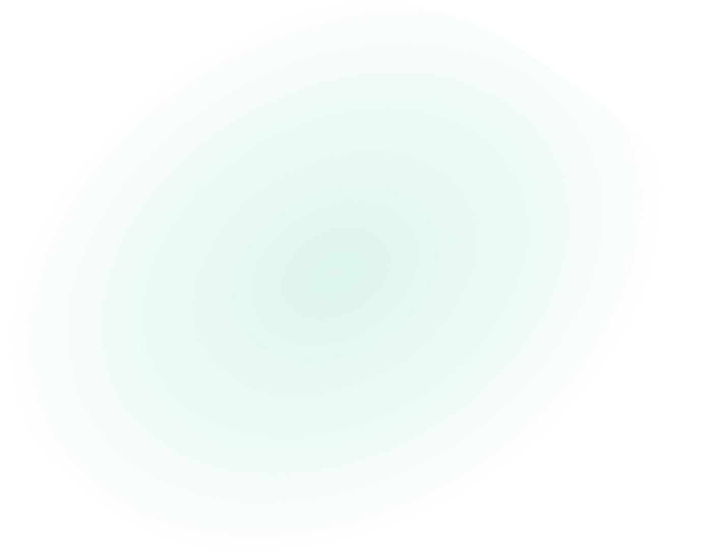

2. HTML
Структура HTML документа и основные теги
Каждый HTML-документ начинается с декларации типа документа или «доктайпа». Тип документа необходим, чтобы браузер мог определить версию HTML и правильно отобразить страницу.
<!DOCTYPE html>
Простейшая HTML-страница состоит как минимум из трёх тегов: <html>, <head> и <body>. Тег <head> обычно содержит заголовок, ключевые слова, описание страницы и другие служебные данные. Также внутри него подключаются внешние ресурсы, например, стили. Содержимое этого тега не отображается на странице напрямую. А в теге <body> хранится содержание страницы, которое отображается в окне браузера.
Для подключения стилей к странице существует тег <link>. Для этого у него есть атрибут href в котором задаётся адрес стилевого файла, а значение stylesheet атрибута rel говорит браузеру, что мы подключаем именно стили, а не что-то другое.
Пример структуры документа
Основные теги
Все HTML элементы делятся на две группы:
• блочные (block)
• строчные (inline)
Блочные элементы представляют собой большие строительные блоки вашей веб-страницы. При отображении браузер автоматически добавляет разрыв строки до и после блочного элемента, при этом он занимает всю доступную ширину (по умолчанию отображается на веб-странице в виде прямоугольника), а высота блочного элемента вычисляется браузером автоматически, исходя из объема его содержимого. Текст в блочных элементах по умолчанию выравнивается по левому краю. Обычно блочные элементы используются, чтобы разделить содержимое веб-страницы на логические блоки (например: верхний колонтитул (шапка сайта), меню, блок с контентом, нижний колонтитул (footer) и др.). Блочные элементы нельзя вкладывать в строчные, исключением являются только ссылки и ячейки таблиц, внутри которых по стандарту HTML5 могут быть расположены блочные элементы.
Строчные элементы используются для разметки частей содержимого элементов. Ширина строчного элемента равна объему содержимого. В отличии от блочных элементов браузер не добавляет разрыв строки до и после строчного элемента, поэтому, если несколько строчных элементов идут подряд друг за другом, они располагаются на одной строке и переносятся на другую строку при необходимости. В большинстве случаев внутрь строчных элементов допустимо помещать другие строчные элементы, вставлять блочные элементы внутрь строчных запрещено.
Строчные теги
<a> Создает гиперссылку.
<b> Выделяет текст жирным шрифтом.
<button> Создает кнопку.
<i> Преобразует текст в курсивный.
<img> Определяет изображение.
<input> Создает поле для ввода данных.
<select> Создает выпадающий список.
<span> Определяет строчный элемент документа.
<strong> Определяет важный текст - преобразует шрифт в полужирный.
<textarea> Создает многострочное текстовое поле.
<var> Определяет переменную - выделяет текст курсивом.
<video> Добавляет на страницу видео файл.
Блочные теги
<aside> Определяет контент в стороне от содержимого страницы.
<div> Определяет раздел документа.
<footer> Нижняя часть документа.
<form> Определяет HTML форму.
<h1> - <h6> Определяют HTML заголовки.
<header> Задает "шапку" сайта или раздела.
<nav> Определяет группу ссылок для навигации.
<ol> Создает нумерованный(упорядоченный) список.
<p> Определяет абзац.
<section> Определяет разделы документа.
<ul> Определяет маркированный(неупорядоченный) список.